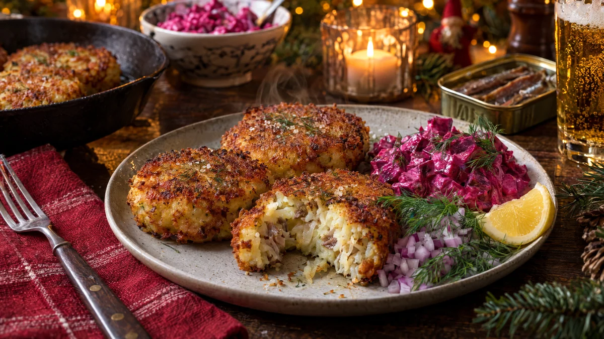

RESTFEST · RECEPTHuvudrätt
Krispiga janssonbiffar med rödbetssallad och dill
Resterna av Janssons frestelse, ett ägg och lite ströbröd. Den kalla gratängen formas till runda biffar, vänds i ströbröd och steks i smör tills de är krispiga och gyllene utanpå och krämiga inuti. De serveras med julbordets rödbetssallad, rödlök och dill. Julens mest omtyckta rätt, ännu godare dagen efter.
- Förberedelse
- 15 min + 30 min i kylen
- Tillagning
- 15 min
- Portioner
- 4 (ca 12 biffar)
- Nivå
- Nybörjare
 Det här behöver du
Det här behöver du
Tryck på + vid det du behöver köpa.
Biffar
Till servering
Gör så här
- Lägg den kalla janssonen i en skål och mosa den grovt med en gaffel, så att potatisstrimlorna bryts sönder lite. Rör ner ägget och mjölet.
- Forma smeten till biffar med fuktiga händer, ca 7 cm breda och 2 cm tjocka. Är smeten för lös, tillsätt lite mer mjöl.
- Vänd biffarna i ströbrödet och tryck till så att det fastnar. Lägg dem på en plåt och kyl i 30 minuter, så håller de ihop bättre i pannan.
- Hetta upp smör och olja i en stekpanna på medelvärme. Stek biffarna i 3–4 minuter per sida, tills de är djupt gyllene och krispiga. Vänd dem försiktigt med en bred stekspade.
- Låt dem rinna av på hushållspapper och håll dem varma i ugnen på 100 grader medan du steker resten.
- Finhacka rödlöken.
Har du ingen Jansson över? Blanda 8 grovt rivna, kokta och kalla potatisar med 1 finhackad gul lök som stekts mjuk i smör, 6 hackade ansjovisfiléer, 1 msk spad från ansjovisburken, ½ dl vispgrädde och 1 krm vitpeppar. Fortsätt sedan från steg 1.
Dekoration och servering
- Lägg 2–3 biffar per person lätt överlappande på en tallrik, med den krispigaste sidan uppåt.
- Lägg en klick rödbetssallad bredvid, så att det rosa lyser mot det gyllene.
- Strö över rödlök och dillkvistar och servera med citronklyftor.
- Ett glas kall öl eller julmust passar perfekt.
Mått och ugnstemperaturer
Måtten är svenska (dl, msk, tsk, krm). Ugnstemperaturerna gäller vanlig ugn med över- och undervärme; med varmluft, sänk med 20 grader.